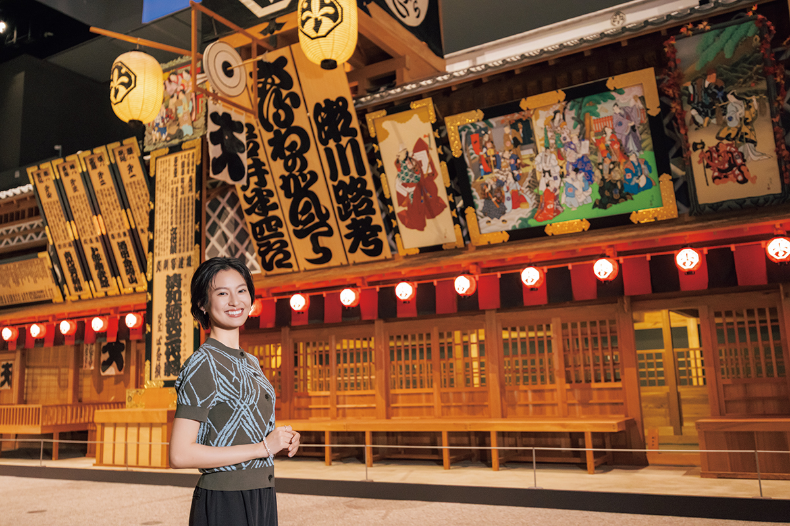
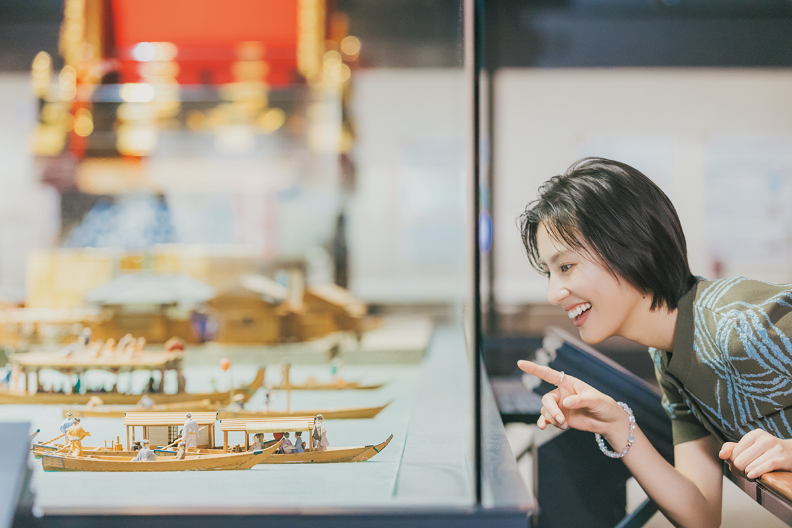
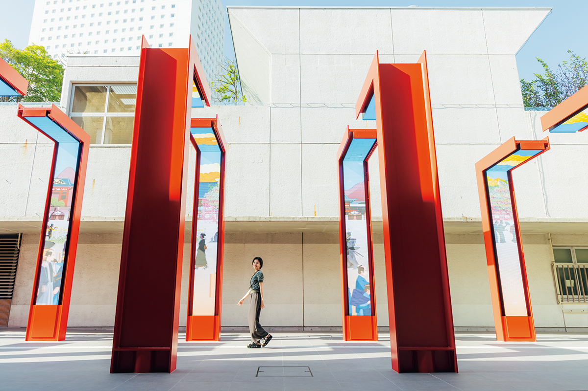
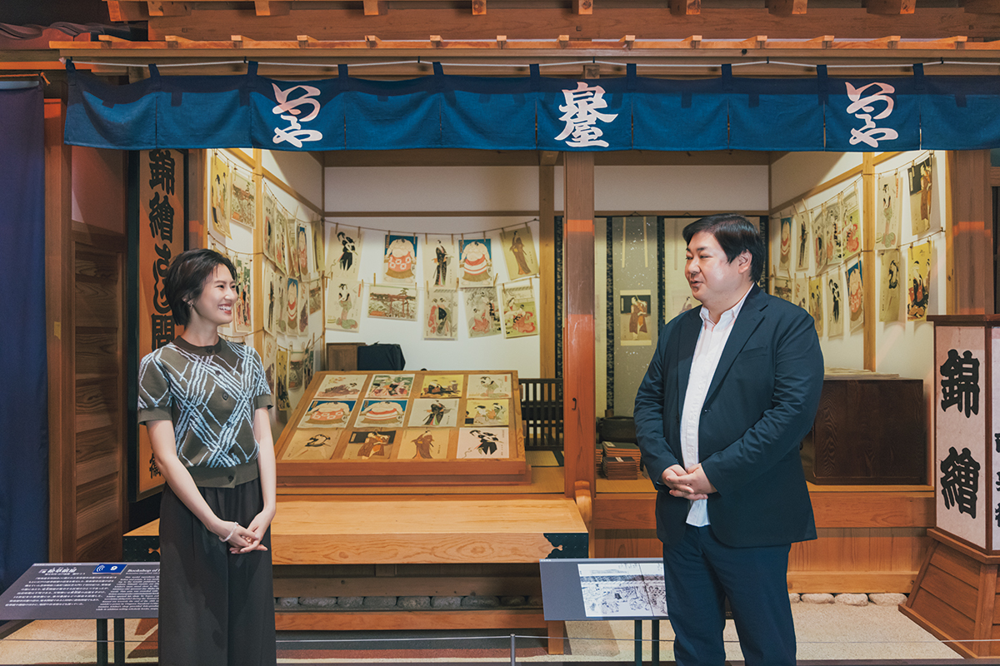
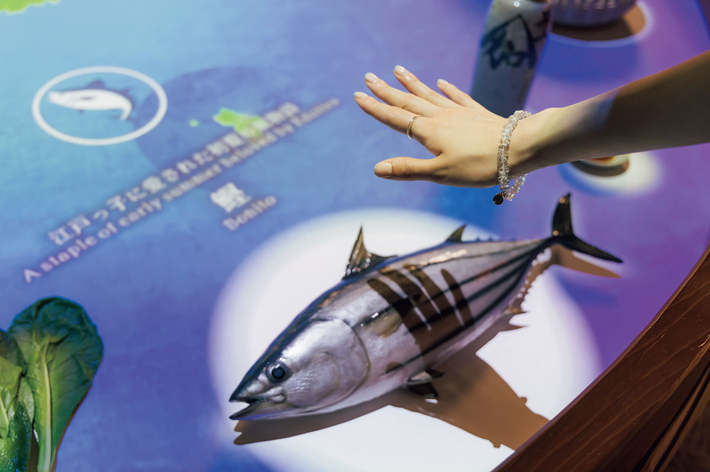
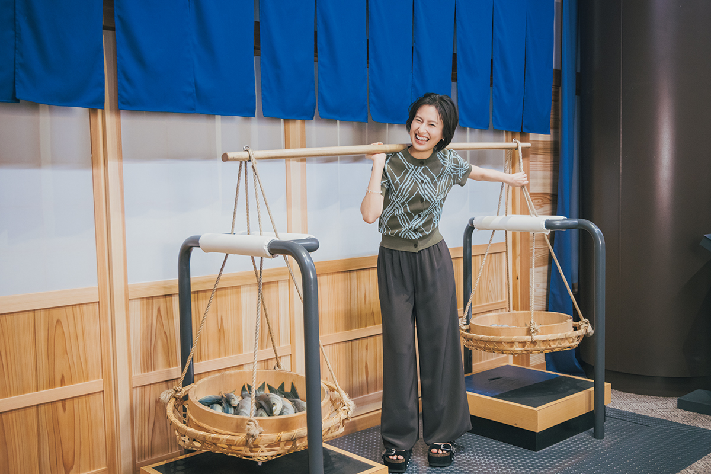
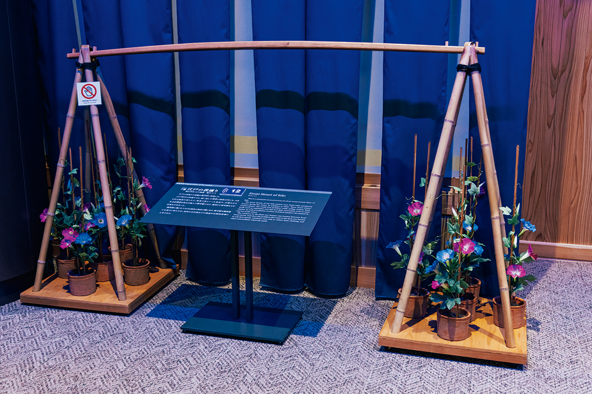
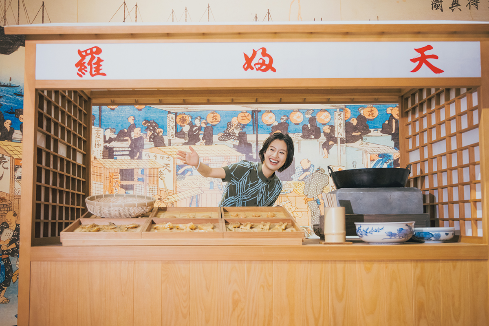
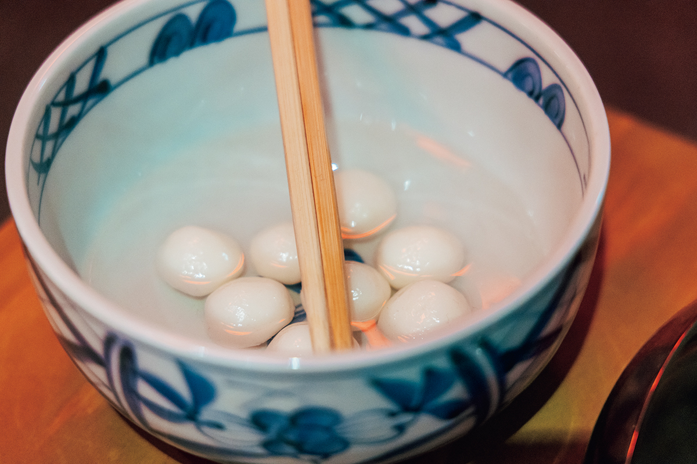

Токио · Сумида · музей
Музей Эдо-Токио после ремонта: театр в натуральную величину, тесные дома и летние хитрости старого города

Мост Нихонбаси, театр кабуки, длинный дом, где жили горожане: в Музее Эдо-Токио старый город собран из макетов в натуральную величину. В марте 2026 года музей открылся после ремонта, и прогулка по Эдо стала ещё нагляднее.
Музей
Новая жизнь здания 1993 года
«Какой размах! И внутрь можно зайти и выглянуть наружу. Представляю, как на дальних местах люди Эдо смотрят кабуки и веселятся, и самой становится интересно». Так актриса, которая увлекается японской культурой, встретила макет театра «Накамура-дза» в натуральную величину. Она пришла в Музей Эдо-Токио: после почти четырёх лет ремонта он снова открылся 31 марта 2026 года.

Музей задумывали как символ Токио. Здание к открытию в 1993 году спроектировал архитектор Киёнори Кикутакэ (1928–2011). Его полностью обновили вместе с архитектором, который руководит нью-йоркским отделением известного бюро OMA. Изношенные стены и интерьеры отремонтировали, поставили новое оборудование и постарались, чтобы музей меньше нагружал природу. Вход и вестибюль расширили, музеем стало удобнее пользоваться, в том числе людям на колясках, рассказывает куратор, который отвечает и за связи с публикой.
«Мы хотели, чтобы посетитель глубже погружался из сегодняшнего дня в Эдо, и для этого продумали пространство и видео. Добавили новые макеты, изменили подачу экспонатов, а в театр можно зайти внутрь. Эдо здесь стало интереснее разглядывать»
куратор музея
Вход
Через ворота тории в старый город
Путь в музей начинается с 24 арок в виде ворот тории: говорят, святилищ Инари в Эдо было очень много. На арках идёт видео. Сначала по улице проезжает молодой человек на электросамокате, потом картинка постепенно превращается в город Эдо, где по улице шагают самураи. Пока идёшь, будни остаются позади. Бывают и сезонные видео.

«Вход как ворота святилища, очень красиво. И в видео идут самураи, как будто сама гуляешь по Эдо»
актриса
Дальше открывается вестибюль. Стену здесь сделал известный мастер-штукатур, а решётчатый потолок и кассы отделаны деревом, и в зале тепло и уютно. Актриса училась смотреть на здания у деда, плотника, и сразу заметила работу мастеров: «В стенах и потолке видно японское ремесло. Гостям из-за границы это наверняка понравится».
Эдо
Нихонбаси, театр и книжная лавка
В зоне Эдо стоят мост Нихонбаси и театр «Накамура-дза», самые любимые экспонаты музея с самого открытия. Сюда добавили большой экран: на нём небо над Эдо меняется от утра к ночи, видна гора Фудзи. Вид с Нихонбаси на Фудзи в лучах восхода или в закатном свете так и просит фотографии. Снимать можно всю постоянную экспозицию.

Тоёкуни Утагава (1769–1825) был мастером гравюр укиё-э, известным портретами актёров кабуки и красавиц. Его листы продавались в таких лавках, как та, что стоит в музее.
Ещё одна новинка посвящена тому, как товары попадали в город. Экспонат реагирует на поднесённую руку. В начале эпохи Эдо грузы шли в основном по морю из Осаки и Киото, а когда город начал потреблять всё больше, товары стали везти и из окрестных деревень.

Быт
Четыре с половиной татами на семью
Следующий раздел о том, как жили горожане. В макете «мунэвари-нагая», длинного дома, разделённого на тесные комнаты, можно почувствовать, сколько места было у одной семьи.

«Комната на четыре с половиной татами. А где туалет, где ванна? Тут жили по одному? Похоже на модные сегодня крошечные дома»
актриса
«Бывало, что жила семья из четырёх человек. Туалет общий, мылись в общественной бане. Мне кажется, горожане считали своим жильём весь длинный дом целиком»
куратор музея
В макете есть отдельные уборные для мужчин и женщин, место для мусора, колодец, у которого собирались женщины, и площадка для сушки белья. Весь дом и был общим жилищем.

Лето
Большие суши и холодная вода с клёцками
Горожане любили выйти вечером на прохладу и ходить на праздники, например на ночное ожидание луны «нидзюроку-я-мати» в Таканаве. Без уличных лотков с едой такие вечера не обходились, и в музее их показывают на панно и в уменьшенных макетах. В Эдо было много одиноких мужчин: самураи, приехавшие со своими князьями, и приезжие из провинции на заработках. Поэтому, по словам куратора, в городе так развились лотки, где можно было быстро поесть.
«На лотках любили суши и тэмпуру. Суши были не такие, как сегодня: двух-трёх хватало, чтобы наесться. Тэмпуру ели на палочке, и стоила она от 4 до 8 монов, это примерно 100–200 иен на современные деньги»
куратор музея

У лотка с тэмпурой актриса вошла в роль и стала зазывать покупателей: «Тэмпура с пылу с жару! Не возьмёте, пока не начался фейерверк?» Есть здесь и лоток разносчика лапши собы, чайная с уличной скамьёй и то самое коромысло торговца рыбой.

«Вечером выйти в красивой юкате на прохладу, съесть холодные клёцки или арбуз, поставить у дома вьюнки. Люди Эдо ловили прохладу всеми чувствами и умели радоваться жаре. Эти хитрости пригодятся и сегодня. Хочется в Эдо, на месяц, а потом обратно»
актриса
Музей Эдо-Токио
- Адрес
- Токио, район Сумида, Ёкоами, 1-4-1
- Телефон
- +81 3-3626-9974
- Часы работы
- 9:30–17:30, в субботу до 19:30, последний вход за 30 минут до закрытия
- Выходные
- понедельник (если это праздник, то следующий день)
- Цены / Вход
- постоянная экспозиция 800 иен для взрослых
Фото: Майко Фукуи.